Selected Projects
Open-source research systems from our group and collaborators — spanning embodied AI & robotics, autonomous driving, generative models, and efficient multimodal foundation models.
# equal contribution* corresponding author
-
AdaRoboVLG: Adaptive Vision-Language Grasping via Composable Foundation Priors and Generalizable Grasp Synthesis
A task-adaptive Vision-Language-Grasp framework that decouples physical grasp synthesis from task-dependent understanding, supporting generalizable grasping across different robotic hands via composable foundation-model priors.
-
DreamWAM: Beyond RGB Future Prediction for World Action Models
A world action model that reformulates future prediction as structured world modeling beyond RGB, representing future states through complementary views of appearance, motion, geometry, and semantics for robust manipulation.
-
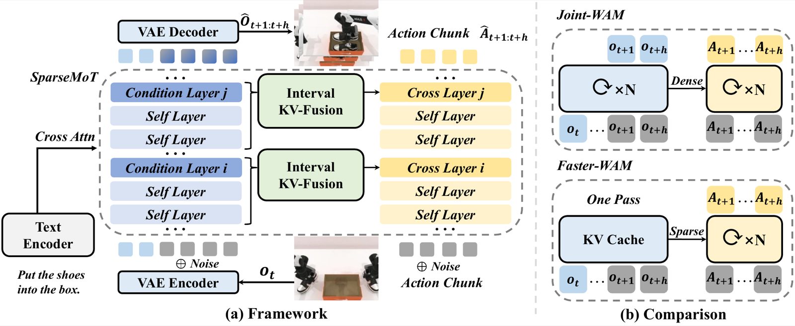
Faster-WAM: Efficient Inference-Time Future Conditioning for Robust World Action Models
A world action model that computes future representations once and selectively reuses them during action denoising, achieving robust out-of-distribution generalization with substantially reduced inference latency.
-
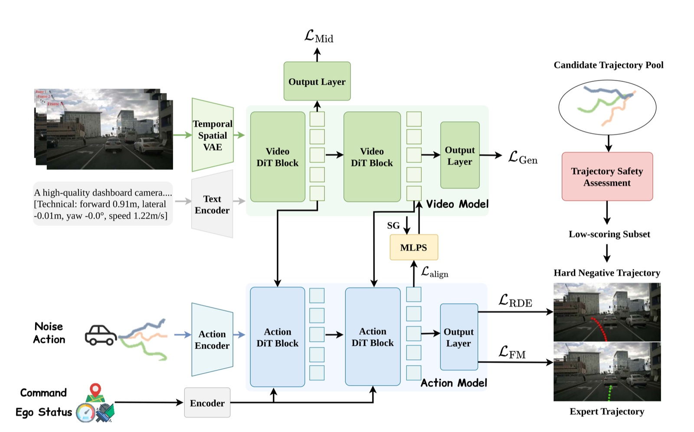
ReWorld: Learning Better Representations for World Action Models
The first representation learning framework for autonomous-driving world action models, explicitly optimizing the latent world-to-action pathway without external encoders or teacher models at only +0.3% training cost.
-
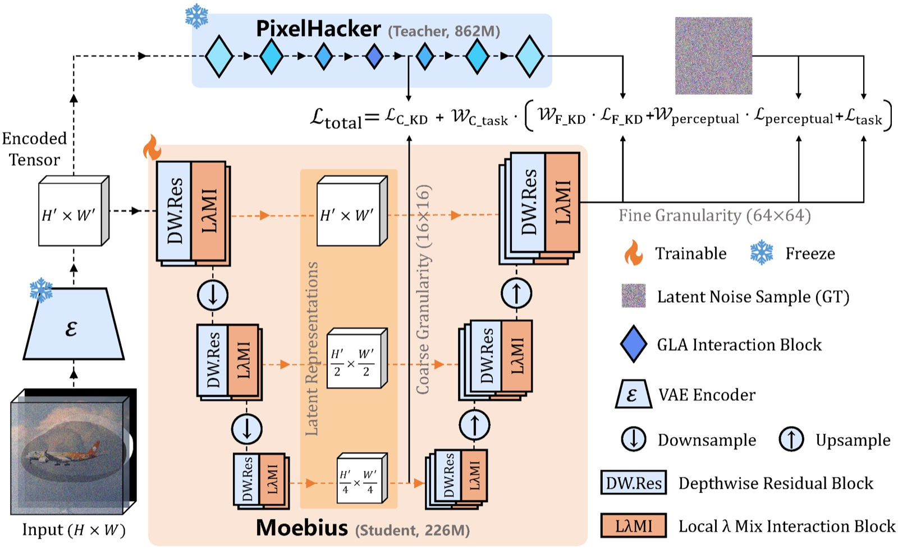
Moebius: 0.2B Lightweight Image Inpainting Framework with 10B-Level Performance
A 0.2B lightweight image inpainting framework that delivers 10B-level performance.
-
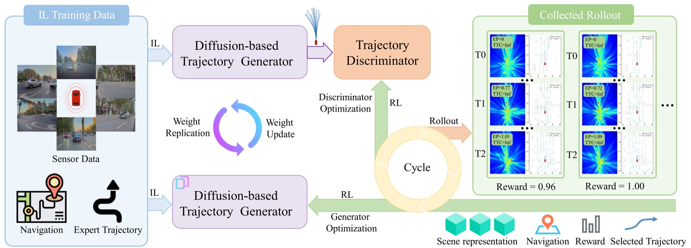
RAD-2: Scaling Reinforcement Learning in a Generator-Discriminator Framework
A generator-discriminator framework for closed-loop driving: a diffusion generator proposes diverse trajectory candidates while an RL-optimized discriminator reranks them by long-term driving quality, reducing the collision rate by 56% over strong diffusion planners.
-

UniDriveVLA: Unifying Understanding, Perception, and Action Planning for Autonomous Driving
A unified driving vision-language-action model based on Mixture-of-Transformers, decoupling driving understanding, scene perception, and action planning into specialized experts coordinated through masked joint attention.
-
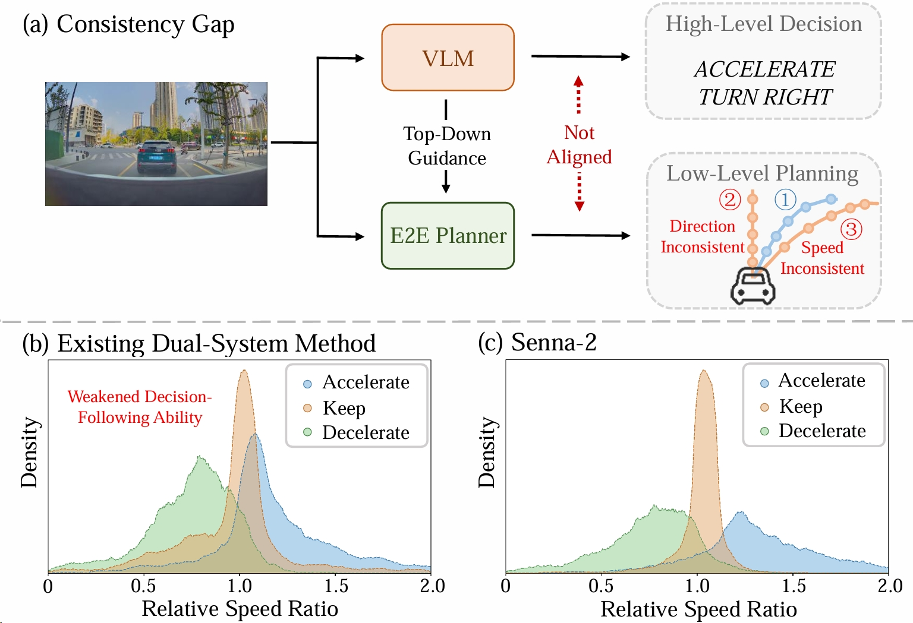
Senna-2: Aligning VLM and End-to-End Driving Policy for Consistent Decision Making and Planning
A VLM-E2E driving policy that explicitly aligns the VLM's high-level decisions with the E2E policy's low-level planning, via consistency-oriented three-stage training and hierarchical reinforcement learning in 3DGS environments.
-
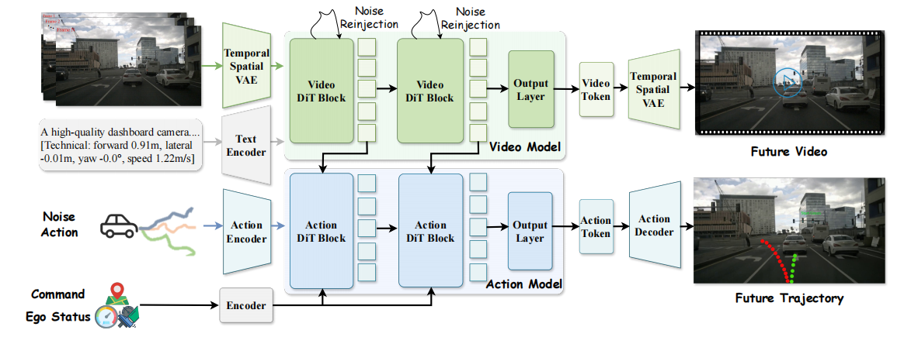
DriveLaW: Unifying Planning and Video Generation in a Latent Driving World
A driving world model that unifies video generation and motion planning by injecting the video generator's latent representation directly into a diffusion planner, achieving state-of-the-art results on both nuScenes video prediction and NAVSIM planning.
-
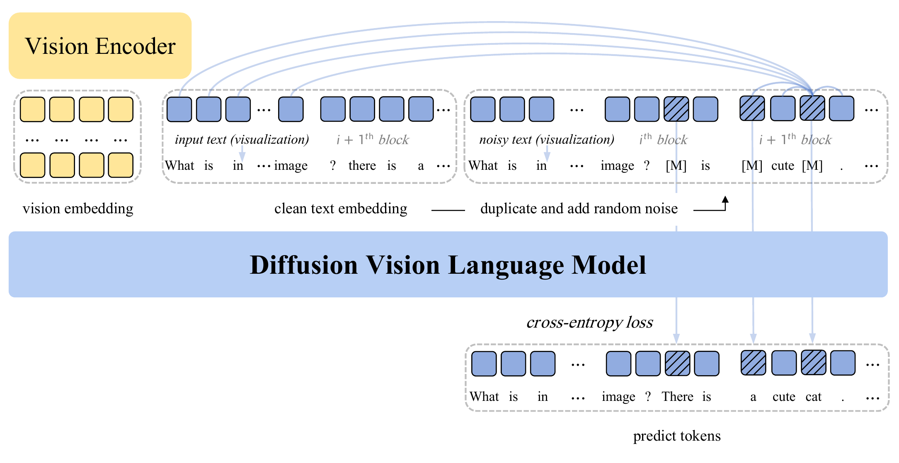
-
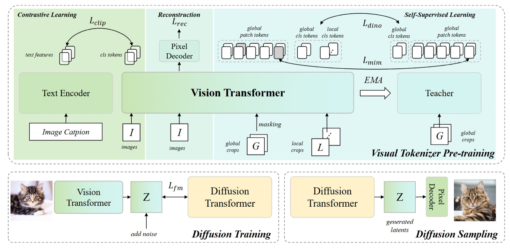
VTP: Towards Scalable Pre-training of Visual Tokenizers for Generation
A unified visual tokenizer pre-training framework that jointly optimizes contrastive, self-supervised, and reconstruction objectives, unlocking a new scaling law where generation performance scales with tokenizer pre-training compute, parameters, and data.
-
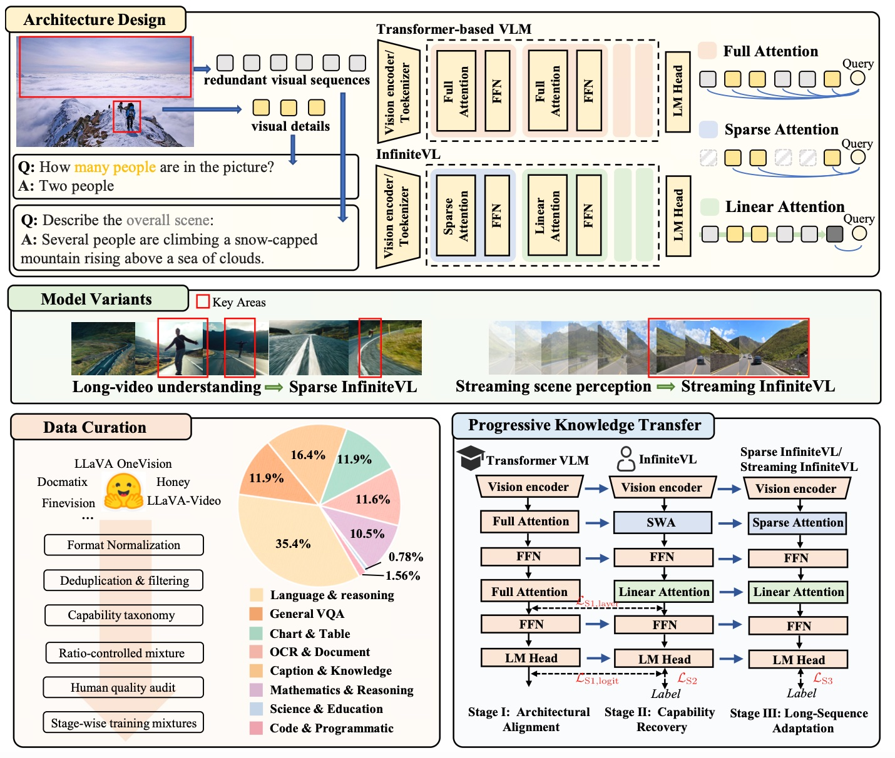
InfiniteVL: Synergizing Linear and Sparse Attention for Highly-Efficient, Unlimited-Input Vision-Language Models
An efficient vision-language model that combines linear attention for compact long-term memory with sparse attention for precise visual perception, supporting unlimited-input streaming with a constant memory footprint.
-
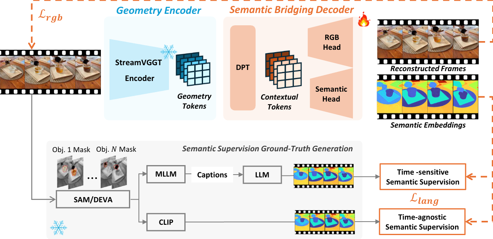
4DLangVGGT: 4D Language-Visual Geometry Grounded Transformer
The first Transformer-based feed-forward framework for 4D language grounding, jointly integrating geometric perception (StreamVGGT) and language alignment (Semantic Bridging Decoder) — no per-scene optimization, generalizing across dynamic scenes.
-
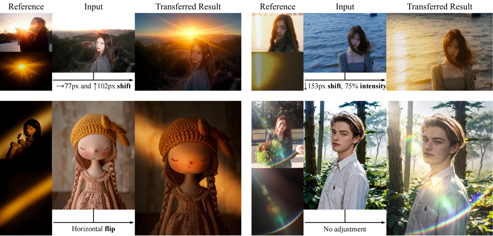
TransLight: Image-Guided Customized Lighting Control with Generative Decoupling
Image-guided customized lighting control: generative decoupling transfers the lighting effects of any reference image onto user content, enabling text-free, precise relighting.
-
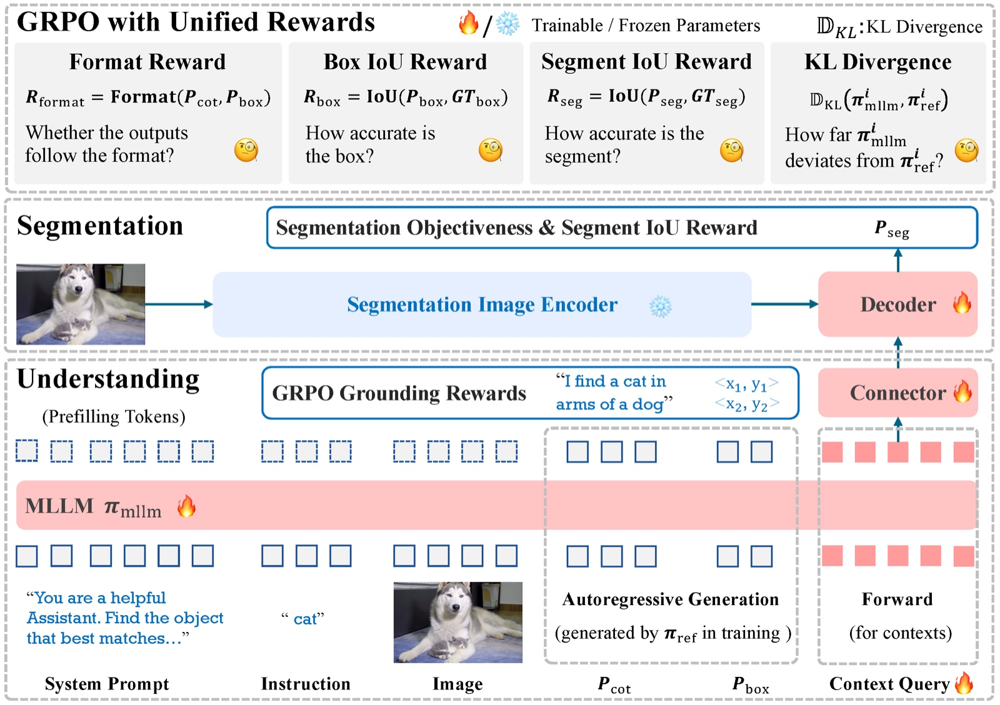
LENS: Learning to Segment Anything with Unified Reinforced Reasoning
Segment anything with unified reinforced reasoning: a multimodal model that reasons over complex referring expressions and produces precise segmentation masks, trained end-to-end with reinforcement learning.
-
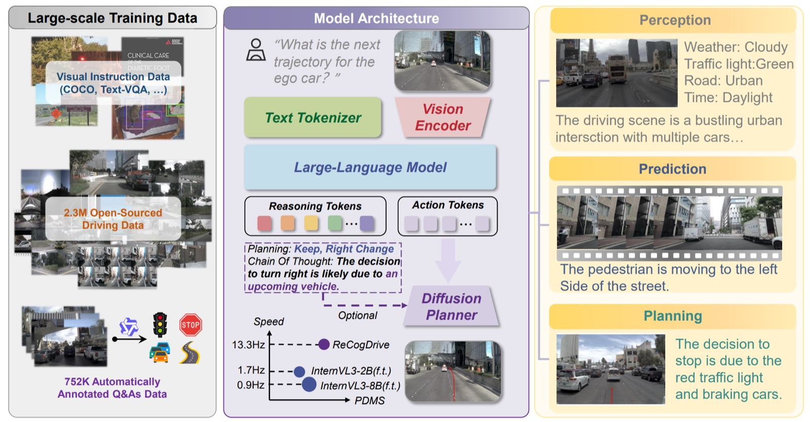
ReCogDrive: A Reinforced Cognitive Framework for End-to-End Autonomous Driving
A reinforced cognitive driving framework that unifies driving understanding and planning by combining a cognition-enhanced VLM with a diffusion planner, further reinforced by DiffGRPO for safer and more comfortable trajectories.
-
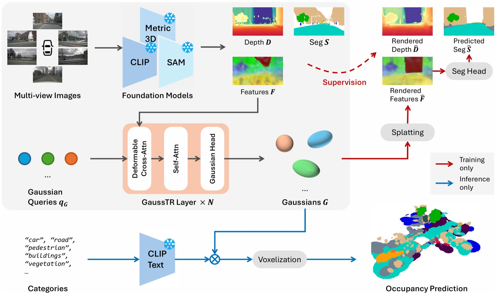
GaussTR: Foundation Model-Aligned Gaussian Transformer for Self-Supervised 3D Spatial Understanding
Self-supervised 3D spatial understanding: aligning Gaussian-based 3D representations with foundation-model features, enabling open-vocabulary 3D perception without manual 3D annotations.
-
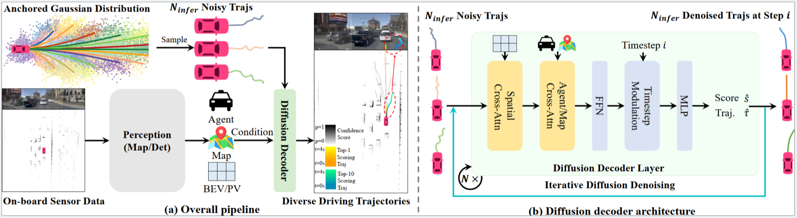
-
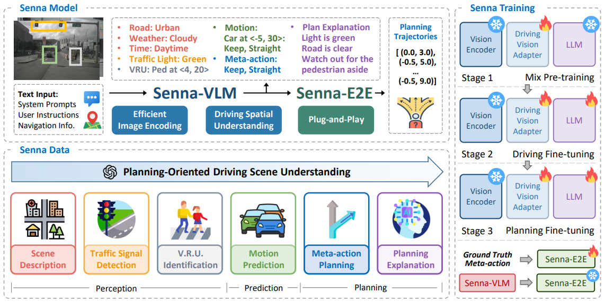
-

VADv2: End-to-End Autonomous Driving via Probabilistic Planning
End-to-end vectorized autonomous driving that outputs a probabilistic distribution over actions learned from large-scale driving demonstrations and samples one action to control the vehicle.
-
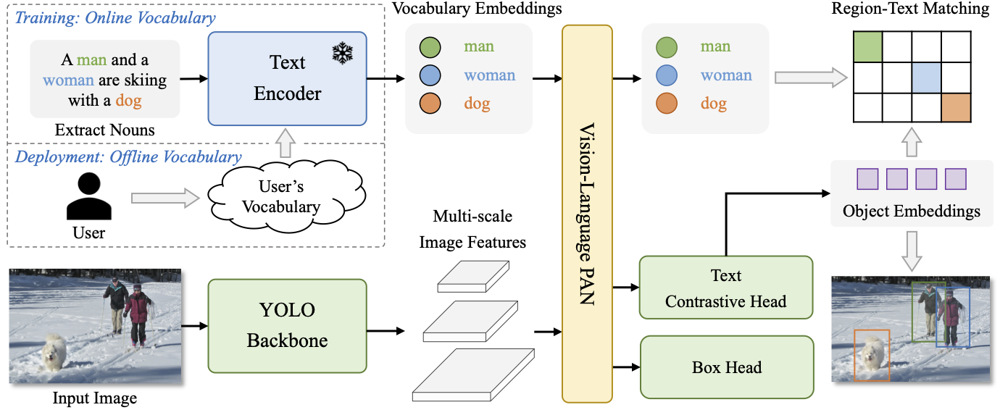
YOLO-World: Real-Time Open-Vocabulary Object Detection
Real-time open-vocabulary detection: YOLO enhanced with vision-language modeling via the re-parameterizable RepVL-PAN and region-text contrastive pre-training, reaching 35.4 AP at 52 FPS on LVIS zero-shot.
-
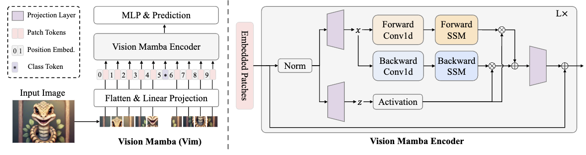
-
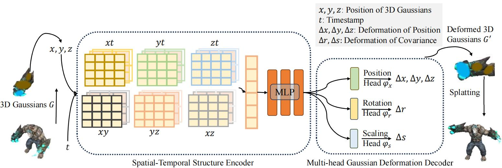
4D Gaussian Splatting for Real-Time Dynamic Scene Rendering
Real-time rendering of dynamic scenes by modeling 4D scenes with Gaussian splatting and a compact spatio-temporal representation, achieving high-quality novel-view synthesis at interactive frame rates.
-
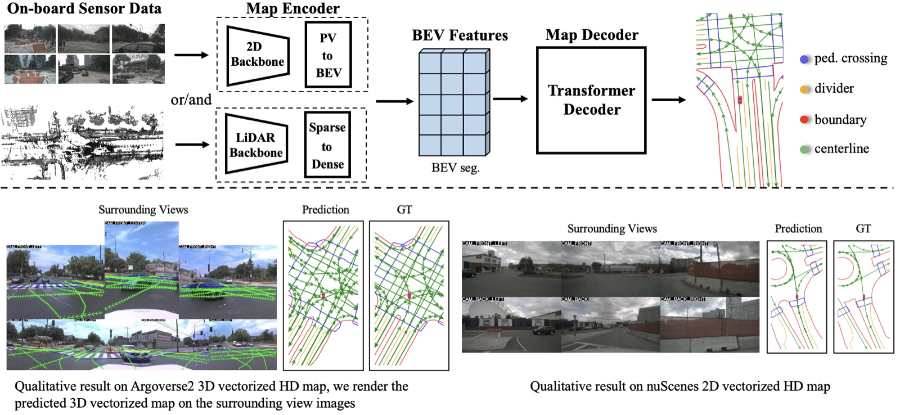
-
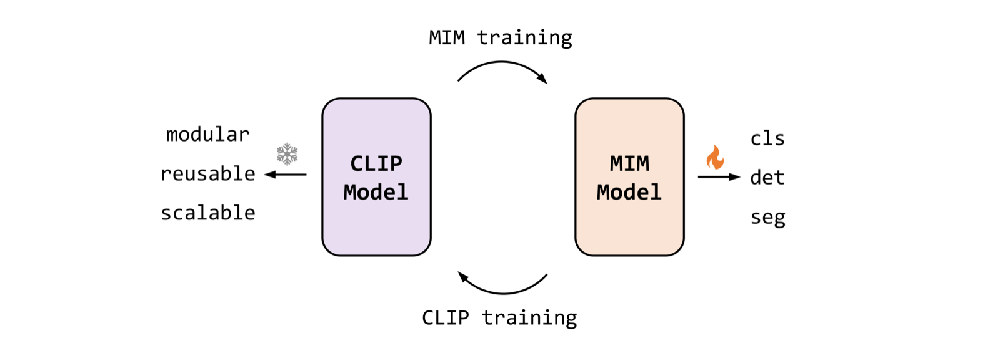
-
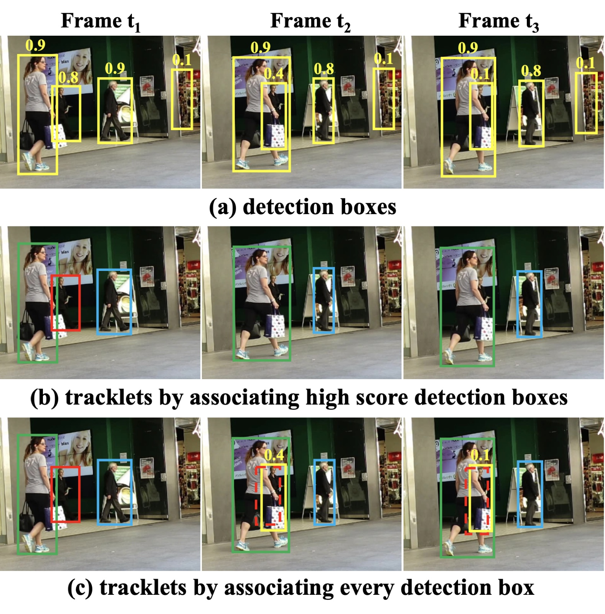
ByteTrack: Multi-Object Tracking by Associating Every Detection Box
Simple yet effective multi-object tracking: by associating every detection box instead of only high-scoring ones, ByteTrack recovers true objects from low-score detections and filters out background, setting the standard tracker integrated in YOLOv8 and beyond.
-
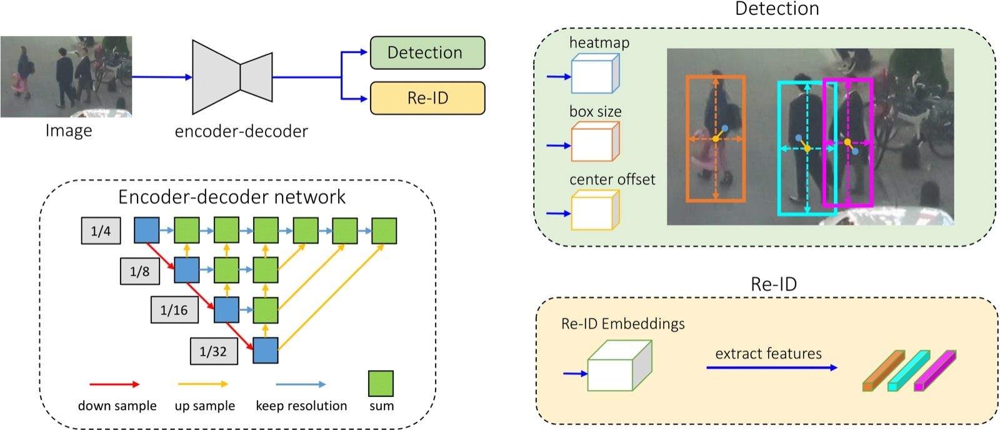
-
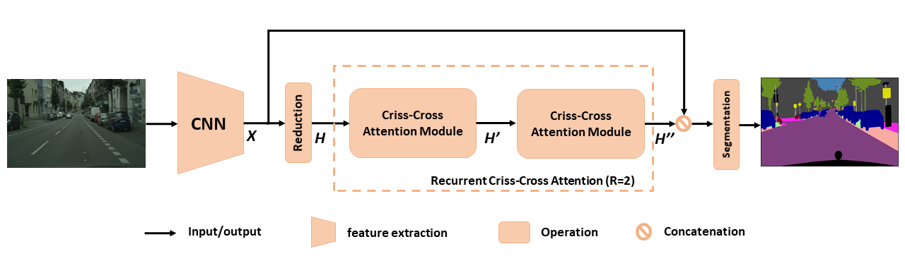